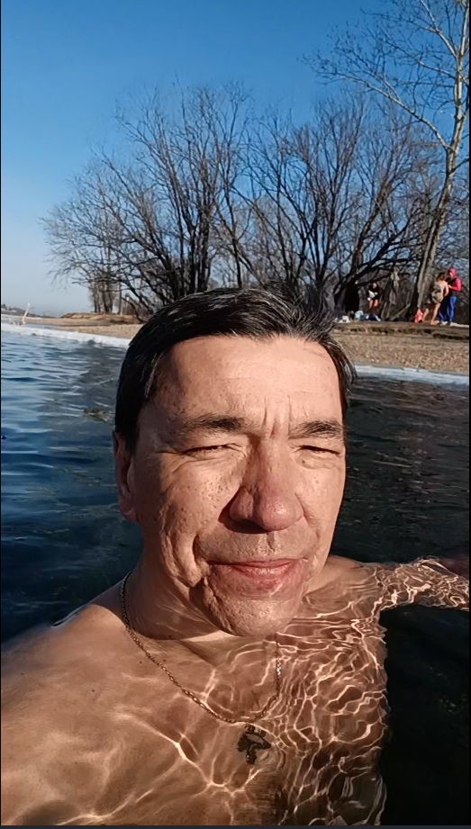

МОЯ СУББОТНЯЯ ТРАДИЦИЯ01 / КУПАНИЕХолодная вода.
Холодная вода.
Тёплая компания.
Каждую субботу купаюсь. Моржевание для меня — важная часть жизни и повод встретиться с людьми, которым тоже нравится такой отдых.
Окунание в моём Telegram ↗